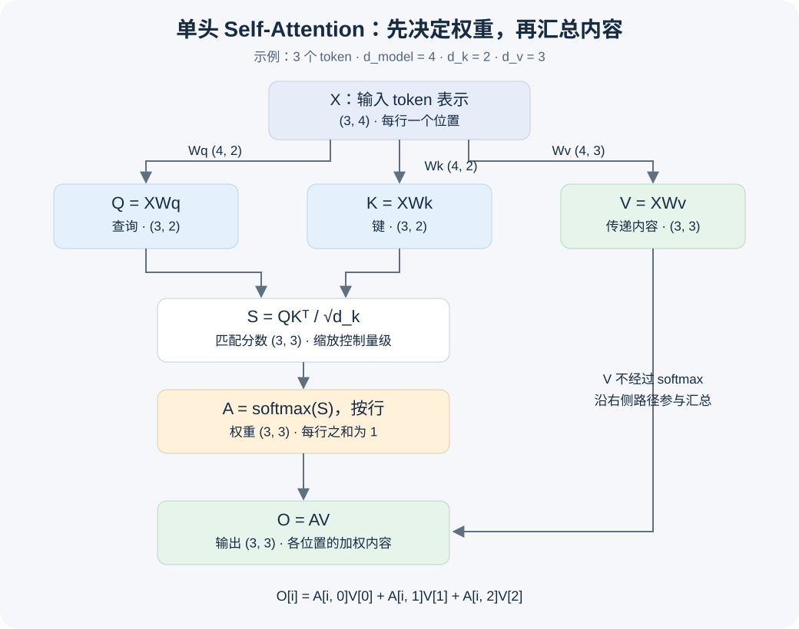

单头 Self-Attention
从一句话到一次加权求和
每个位置先算出“从其他位置取多少信息”，再按这个比例混合内容。下面用三个 token、手工设定的向量和投影矩阵，完整走一遍前向计算。
两条路径，在最后汇合


“查询、匹配、内容”是入门类比。Q、K、V 是由投影计算出的向量，并不是人工填写的文字问题或标签。Self 指三者都来自同一输入序列；单头 指这里只有一套注意力计算。
一句话，先变成矩阵 X
玩具文本：“我 喜欢 学习”。本例按空格拆分成三个 token，对应 ID 为 [0, 1, 2]，再从 embedding 表取出三行。真实 tokenizer 不一定按词或空格拆分。
X 有 3 行，表示 3 个序列位置；每行有 4 个特征，所以 X.shape = (3, 4)。数字是教学用手工参数，不代表训练得到的语义。
用三组投影，将同一输入转成不同用途的表示
[1, 0, 0, 1] @ Wq = [1, 0]
第一维：1×1 + 0×0 + 0×1 + 1×0 = 1
第二维：1×0 + 0×1 + 0×1 + 1×0 = 0
这里 d_k = 2、d_v = 3。Q 和 K 的维度必须匹配，才能做点积；V 的维度可以不同。所有位置共享同一组投影矩阵，投影这一步本身还没有混合位置间的信息。
真实模型通常通过训练更新 embedding 表与投影参数。本页省略投影偏置，只演示前向计算。
QKᵀ：每个位置与每个位置做一次点积
把 K 转置后，每一列对应一个键向量，矩阵乘法就能一次完成全部两两点积。第 i 行是查询位置 i，第 j 列是键位置 j。
Q[0] = [1, 0]，分别匹配三个 K：
“我”：[1, 0] · [1, 0] = 1
“喜欢”：[1, 0] · [0, 1] = 0
“学习”：[1, 0] · [1, -1] = 1
所以第一行分数为 [1, 0, 1]。分数可以为负数，还不是概率。
为何除以 √d_k？
点积把 d_k 个乘积相加。假设各分量近似独立、零均值、方差为 1，那么点积的方差约为 d_k，标准差约为 √d_k。除以这个尺度，可以减轻维度增大时分数波动扩大、softmax 变得过于尖锐的问题。
缩放控制的是分数的量级。它不会让一行之和等于 1；归一化是后面 softmax 的工作。这是统计设计动机，不保证任何输入的方差都恰好为 1。
直觉对照：分数差距变大时会怎样？
softmax([1, 2, 3]) ≈ [0.0900, 0.2447, 0.6652]softmax([10, 20, 30]) ≈ [0.0000, 0.0000, 1.0000]
后一组几乎只关注一个位置，softmax 的梯度也可能很小。缩放有助于减轻这种现象。
按行 softmax，再乘 V
对每个查询位置，分别把它的分数转成一组权重：
分数：[0.7071, 0, 0.7071]
减最大值：[0, -0.7071, 0]
取指数：[1, 0.4931, 1]
除以总和 2.4931：[0.4011, 0.1978, 0.4011]
同一行减去相同常数，分子分母的公共因子抵消，因此结果不变。
A[i, j] 表示输出位置 i 分配给 V 第 j 行的权重。每行之和为 1；列和通常不是 1，A 也不一定对称。表内显示四位小数，舍入后求和可能有微小误差。
最后的矩阵乘法，其实是逐行加权求和
V[0] = [2, 1, 1]，V[1] = [1, 2, 1]，V[2] = [1, 1, 2]。
第一维约为 0.4011×2 + 0.1978×1 + 0.4011×1 = 1.4011。另外两维用同样的方法计算。
输出 O 是融合上下文后的向量表示，不是下一个 token 的概率，也不必每行之和为 1。本页没有输出投影、残差连接、LayerNorm、位置编码或 causal mask，三个位置都可以相互关注。
改变一个量，观察信息如何传播
切换实验、拖动变化量，再选择查询位置。所有表格使用同一套精确计算，显示值保留四位小数。
当前查询对各个键的注意力权重
差值与“相同缩放设置下的原始输入”比较。只修改 Q 或 V 的实验用于隔离变量；实际修改 X 时，Q、K、V 都需要重新投影。变化方向由手工参数决定，不等同于真实语言模型的语义行为。
应该观察到什么？
- 只改 V：A 不变，O 通常改变。若只改 V 的第 j 行，ΔO[i] = A[i, j] × ΔV[j]。
- 只改 Q 的第 0 行：只有分数、权重与输出的第 0 行可能改变。
- 改 X 的第 2 行：第 2 行 Q、K、V 都可能改变；Q 影响分数的一行，K 影响分数的一列，V 影响各位置读取的内容。softmax 共享分母，改变一个分数可能改变该行全部权重。
- 取消缩放：本例分数绝对值通常变大，权重倾向更集中；并非所有可能输入都会出现明显差别。
维度、原理与自查
| 量 | 一般形状 | 本例 | 含义 |
|---|---|---|---|
| X | (n, d_model) | (3, 4) | 输入表示 |
| Wq / Wk | (d_model, d_k) | (4, 2) | 查询与键的投影参数 |
| Wv | (d_model, d_v) | (4, 3) | 值的投影参数 |
| Q / K | (n, d_k) | (3, 2) | 匹配用向量 |
| V | (n, d_v) | (3, 3) | 被混合的内容 |
| S / A | (n, n) | (3, 3) | 位置间的分数 / 权重 |
| O | (n, d_v) | (3, 3) | 各位置的输出表示 |
对应的 NumPy 实现
import numpy as np
Q = X @ Wq
K = X @ Wk
V = X @ Wv
scores = Q @ K.T / np.sqrt(Q.shape[1])
shifted = scores - scores.max(axis=1, keepdims=True)
exp_scores = np.exp(shifted)
A = exp_scores / exp_scores.sum(axis=1, keepdims=True)
O = A @ V
assert np.allclose(A.sum(axis=1), 1)axis=1 沿每行的各列进行计算；keepdims=True 让行最大值与行总和保留为 (n, 1)，便于对每行广播。本例没有 batch 维度。
若 n=5、d_k=3、d_v=4，A 与 O 的形状是什么？
A 为 (5, 5)，O 为 (5, 4)。序列长度决定权重矩阵的行列数，V 的特征维度决定输出的列数。
Q、K、V 与 Wq、Wk、Wv，哪些是参数？
Wq、Wk、Wv 是可训练参数；Q、K、V 是当前输入经过投影产生的中间结果。训练中也需要把梯度传过这些中间结果。
注意力权重可以直接当成模型的完整解释吗？
权重描述当前这一层、这一头如何混合 V，不能单独证明模型的完整推理过程，也不能把手工示例的高权重当成语义理解证据。
“学会这页”意味着能解释并计算一个单头注意力前向过程。多头注意力、位置信息和完整 Transformer Block 在下一阶段继续学习。
配套：第三课讲解 · 计算 Notebook · 第二周安排